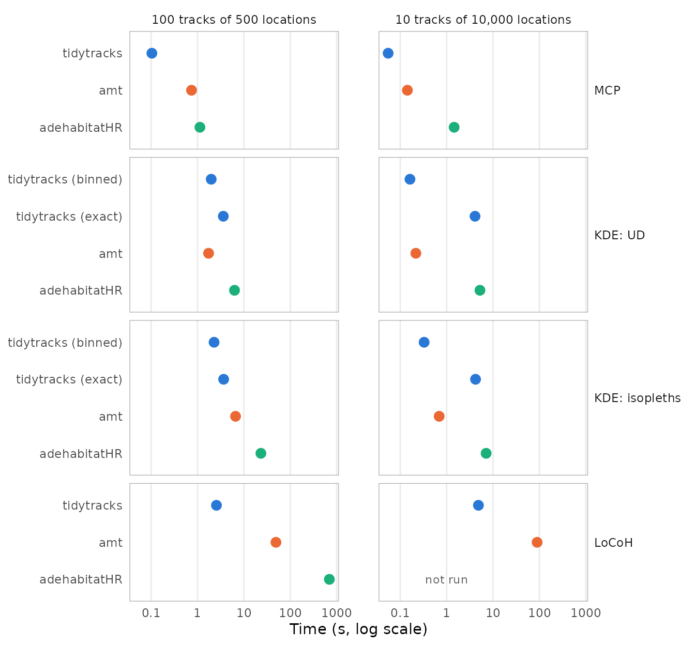
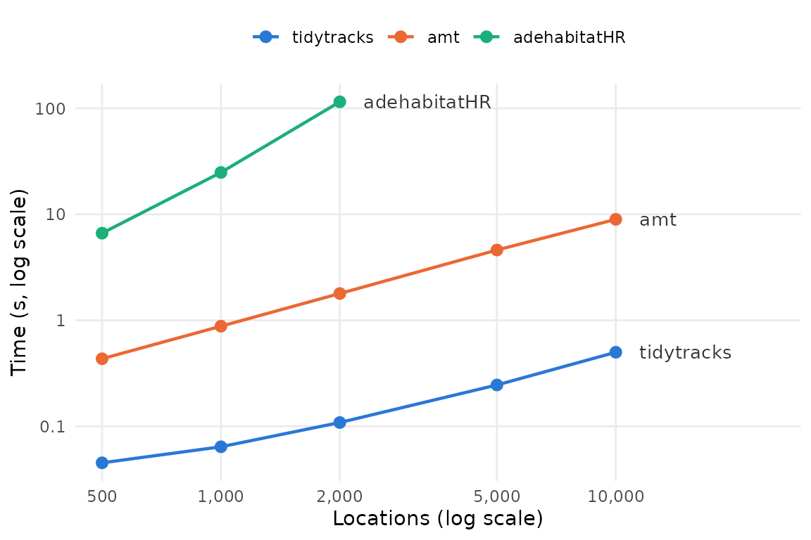
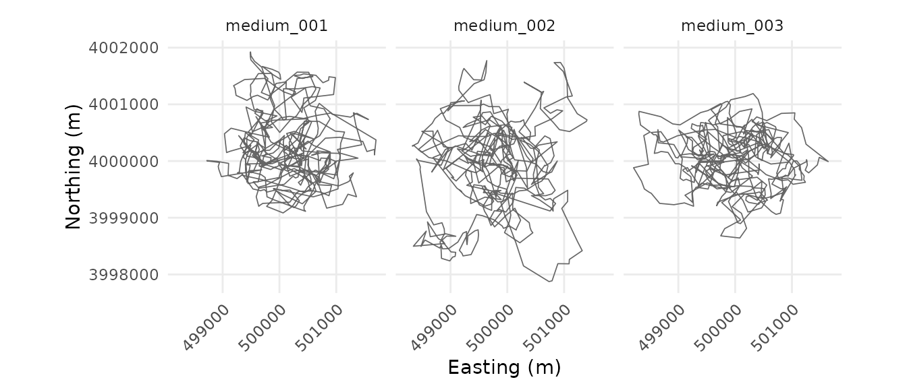

Benchmarking home ranges against amt and adehabitatHR
Source:vignettes/articles/hr_benchmark.Rmd
hr_benchmark.Rmdtidytracks, amt (Signer et al. 2019) and
adehabitatHR (Calenge 2006) can all estimate home ranges
with minimum convex polygons (MCP), kernel density estimation (KDE) and
local convex hulls (LoCoH). This article compares how long they take, on
tracks simulated with amt, and checks that, given the same
settings, they give the same home ranges.
The results come first. The second part, How the benchmark was run, describes the simulated tracks and the benchmark, with their code, and how to run it again.
Results
Summary
- Given the same settings, the three packages give the same MCP and
LoCoH home ranges. The KDE isopleths of
adehabitatHR, and those of the binned method oftidytracks, are within about 0.1% of the exact ones oftidytracks, and those ofamtwithin about 1%, as its grid points are not at the centres of the cells. -
tidytracksis the fastest for MCP and LoCoH (more than 10 times faster thanamt, and more than 100 times faster thanadehabitatHR, for LoCoH), and, with its default binned method, for the KDE isopleths (2 to 3 times faster thanamt). - For the UDs of long tracks, the binned methods of
tidytracksandamtare the fastest (tidytracksslightly faster), more than 20 times faster than the exact methods. - LoCoH in
adehabitatHRbecomes impractical beyond a few thousand locations per track.
The packages are compared on two data sets of tracks simulated with
amt: many tracks of medium length (100 tracks of 500
locations), and a few long tracks (10 tracks of 10,000 locations), with
the same settings in all the packages (see The
data sets and Running the
estimators).
Do the packages give the same home ranges?
For each method, data set and level, we compare the area of the home
range of each track from each estimator with the area from
tidytracks (with its exact method, for the KDE):
| Method | Estimator | Level | Median difference (%) | Largest difference (%) |
|---|---|---|---|---|
| MCP | amt | 50% | 0 | 0 |
| MCP | amt | 95% | 0 | 0 |
| MCP | adehabitatHR | 50% | 0 | 0 |
| MCP | adehabitatHR | 95% | 0 | 0 |
| KDE | tidytracks (binned) | 50% | 0.044 | 0.11 |
| KDE | tidytracks (binned) | 95% | 0.039 | 0.14 |
| KDE | amt | 50% | 0.97 | 1.1 |
| KDE | amt | 95% | 0.98 | 1.1 |
| KDE | adehabitatHR | 50% | 0.0085 | 0.015 |
| KDE | adehabitatHR | 95% | 0.048 | 0.079 |
| LoCoH | amt | 50% | < 0.001 | < 0.001 |
| LoCoH | amt | 95% | < 0.001 | < 0.001 |
| LoCoH | adehabitatHR | 50% | 0 | 0 |
| LoCoH | adehabitatHR | 95% | 0 | 0 |
MCP and LoCoH give the same home ranges in all three packages (the
tiny differences for LoCoH in amt come from its buffering
of each hull by 0.00001 m). For the KDE, the isopleths of
adehabitatHR are within 0.079% of the exact ones of
tidytracks: both evaluate the same kernels at the same
points, and differ only in how they draw the isopleths from the UDs. The
binned estimators approximate the KDE, as binning moves each location by
less than a cell: the binned isopleths of tidytracks are
within 0.14% of the exact ones, and those of amt within
1.1%. Both bin the locations in the same way, and smooth them with the
same kernel, but amt (with
KernSmooth::bkde2D()) estimates the density at grid points
that go from edge to edge of its raster, rather than at the centres of
its cells: they are slightly more than a cell apart, so its UD is
stretched by up to half a cell towards the edges of the grid.
How long do they take?

| Data set | Method | tidytracks | tidytracks (exact KDE) | amt | adehabitatHR |
|---|---|---|---|---|---|
| 100 tracks of 500 locations | MCP | 0.1 | 0.74 | 1.1 | |
| 100 tracks of 500 locations | KDE: UD | 2 | 3.6 | 1.7 | 6.3 |
| 100 tracks of 500 locations | KDE: isopleths | 2.3 | 3.7 | 6.6 | 23 |
| 100 tracks of 500 locations | LoCoH | 2.6 | 49 | 700 | |
| 10 tracks of 10,000 locations | MCP | 0.055 | 0.14 | 1.5 | |
| 10 tracks of 10,000 locations | KDE: UD | 0.16 | 4.1 | 0.22 | 5.2 |
| 10 tracks of 10,000 locations | KDE: isopleths | 0.33 | 4.2 | 0.69 | 7.1 |
| 10 tracks of 10,000 locations | LoCoH | 4.8 | 89 | not run |
-
MCP takes at most about a second in all three
packages.
tidytracksis the fastest:amttakes 7.2 times as long on the medium tracks, andadehabitatHR11 times (26 times on the long tracks). -
KDE: the exact estimators (
tidytrackswithmethod = "exact", andadehabitatHR) evaluate the kernel of every location in every cell of the grid, which takes a time proportional to the number of locations times the number of cells, whilst the binned estimators (tidytrackswith its default,method = "binned", andamt) first bin the locations onto the grid, so that their time hardly depends on the number of locations. On the long tracks, the binned estimators are thus much faster: the UDs take 0.16 s withtidytracksand 0.22 s withamt, against 4.1 s with the exact method oftidytracks(25 times as long) and 5.2 s withadehabitatHR. On the medium tracks, which have fewer locations, the kernels take less time than building the UD of each track:tidytracks(with either method) andamttake 1.7 to 3.6 s, andadehabitatHR6.3 s. Drawing the isopleths of the medium tracks adds little to the time oftidytracks, which draws them straight from the UDs, without building rasters (0.3 s with the binned method), but 4.9 s to that ofamt, and 17 s to that ofadehabitatHR. From the locations to the isopleths, the binned method oftidytracksis thus the fastest on both data sets:amttakes 2.1 to 2.9 times as long, andadehabitatHR10 to 22 times. Most of the time of the exact method oftidytrackson long tracks is spent in a matrix product (inMASS::kde2d()), which an optimised BLAS (such as OpenBLAS) can make several times faster, as it can the matrix products of the binned method; this benchmark used the reference BLAS of R. -
LoCoH:
tidytracksis the fastest, by far:amttakes 18 to 19 times as long, andadehabitatHR270 times as long on the medium tracks (12 minutes, against 2.6 s).LoCoH.k()fromadehabitatHRwas not run on the long tracks, as it would take hours (see below).
LoCoH on a single track

The time taken by tidytracks and amt grows
about linearly with the number of locations, whilst that of
adehabitatHR, which computes the distances between all
pairs of locations (in R), roughly quadruples each time the number of
locations doubles. A track of 10,000 locations would thus take it about
50 minutes, and the 10 long tracks about 8 hours, against 0.5 s per
track for tidytracks.
How the benchmark was run
The benchmark takes about 35 minutes to run, so it was run once with
the script vignettes/articles/code/hr_packages_benchmark.R
(in the source code of the package), and its results are read here from
the directory vignettes/articles/data. It uses tracks
simulated beforehand with the script
vignettes/articles/code/hr_benchmark_tracks.R, and stored
in the same directory, so it can be run again (e.g. on another machine)
without simulating them. The code shown below is taken from these two
scripts. Timings depend on the machine (see Machine and software), but the
differences between the packages should be similar on other
machines.
The benchmark uses these packages:
library(tidytracks)
# amt and adehabitatHR are not attached: their functions are called with ::,
# to make clear which package each of them comes fromSimulating tracks with amt
amt can simulate movement from an integrated step
selection function (iSSF; Avgar et al. 2016), which combines a movement
kernel (the distributions of step lengths and turning angles) with the
selection of the places where steps end. To get tracks that stay within
a home range, the selection decreases with the squared distance from a
centre:
# amt simulates movement from a redistribution kernel, which needs a map of
# the landscape; this one is uniform, as the model below only depends on the
# position of the animal
landscape <- terra::rast(
xmin = -20000, xmax = 20000, ymin = -20000, ymax = 20000,
resolution = 100, crs = "EPSG:32630", vals = 0, names = "habitat"
)
# an integrated step selection model: step lengths with a gamma distribution
# (200 m per hour on average), turning angles with a von Mises distribution
# (some directional persistence), and selection against locations far from
# the centre of the home range, at (0, 0)
movement_model <- amt::make_issf_model(
coefs = c("I(x2_^2 + y2_^2)" = -1e-6),
sl = amt::make_gamma_distr(shape = 2, scale = 100),
ta = amt::make_vonmises_distr(kappa = 1)
)
# simulate a track with one location per hour
simulate_track <- function(id, n_locations, seed) {
set.seed(seed)
start <- amt::make_start(
c(0, 0),
time = as.POSIXct("2024-01-01", tz = "UTC"),
crs = 32630
)
kernel <- amt::redistribution_kernel(
movement_model,
start = start,
map = landscape,
# the model only uses the coordinates at the end of each step, so the
# landscape does not need to be queried
fun = function(xy, map) xy,
# the number of candidate steps drawn at each step (the default, 1e6, is
# much slower)
n.control = 1e3
)
path <- amt::simulate_path(kernel, n.steps = n_locations - 1)
data.frame(
id = id,
# moved to the centre of UTM zone 30N
x = path$x_ + 500000,
y = path$y_ + 4000000,
time = path$t_
)
}For example, the first three tracks of the first data set below:
example_tracks <- lapply(1:3, function(i) {
simulate_track(
id = sprintf("medium_%03d", i),
n_locations = 500,
seed = 1000 + i
)
})
example_tracks <- do.call(rbind, example_tracks)
ggplot(example_tracks, aes(x, y)) +
geom_path(colour = "grey40", linewidth = 0.3) +
facet_wrap(~id) +
coord_equal() +
labs(x = "Easting (m)", y = "Northing (m)") +
theme_minimal() +
theme(
axis.text.x = element_text(angle = 45, hjust = 1),
panel.grid.minor = element_blank()
)
The data sets
We simulate two data sets, with the same model: many tracks of medium length, and a few long tracks (with one location per hour, about three weeks and fourteen months of tracking respectively):
# the number of tracks and of locations per track of each data set
sizes <- list(
medium = c(tracks = 100, locations = 500),
long = c(tracks = 10, locations = 10000)
)
# simulate the tracks of a data set in parallel (with forked processes, which
# are not available on Windows), each track with its own seed
simulate_dataset <- function(name) {
size <- sizes[[name]]
tracks <- parallel::mclapply(
seq_len(size[["tracks"]]),
function(i) {
simulate_track(
id = sprintf("%s_%03d", name, i),
n_locations = size[["locations"]],
seed = 1000 * match(name, names(sizes)) + i
)
},
mc.cores = parallel::detectCores()
)
# a failed simulation returns an error instead of a data frame
stopifnot(all(vapply(tracks, is.data.frame, logical(1))))
do.call(rbind, tracks)
}Simulating the tracks takes about 8 minutes on 4 cores: each step
takes about 10 ms, mostly in the bookkeeping of amt rather
than in the simulation itself. So the tracks were simulated once (with
code/hr_benchmark_tracks.R) and stored in
data/hr_benchmark_tracks.rds, from which the benchmark
reads them:
# the tracks simulated by hr_benchmark_tracks.R: a list of two data frames
# (medium and long) with the id, coordinates (x and y, in EPSG:32630) and time
# of each location
datasets <- readRDS("data/hr_benchmark_tracks.rds")Running the estimators
Each package works on its own class of objects: a move2
object for tidytracks, a track_xy for
amt and a SpatialPointsDataFrame (from
sp) for adehabitatHR. These are built from the
data frame of each data set (outside of the timings):
# the input of each package, built from a data frame of locations
make_inputs <- function(df) {
list(
tidytracks = mt_as_move2(
sf::st_as_sf(df, coords = c("x", "y"), crs = 32630),
time_column = "time",
track_id_column = "id"
),
# nolint next: object_usage_linter.
amt = amt::make_track(df, x, y, time, id = id, crs = 32630),
adehabitatHR = sp::SpatialPointsDataFrame(
df[, c("x", "y")],
data = data.frame(id = factor(df$id)),
proj4string = sp::CRS("EPSG:32630")
)
)
}The KDEs are estimated on the same grid for all the packages:
# the grid on which the KDEs of all the tracks are estimated: the extent of
# all the locations, extended on each side by half its longest side, with 200
# cells along its longest side. It is given to each package in its own way:
# a bounding box and a resolution for tidytracks, a raster for amt, and the
# centres of its cells for adehabitatHR.
make_grid <- function(df) {
side <- max(diff(range(df$x)), diff(range(df$y)))
raster <- terra::rast(
xmin = min(df$x) - side / 2,
xmax = max(df$x) + side / 2,
ymin = min(df$y) - side / 2,
ymax = max(df$y) + side / 2,
resolution = side / 100,
crs = "EPSG:32630"
)
centres <- terra::xyFromCell(raster, seq_len(terra::ncell(raster)))
list(
bbox = c(
xmin = terra::xmin(raster),
ymin = terra::ymin(raster),
xmax = terra::xmax(raster),
ymax = terra::ymax(raster)
),
res = terra::res(raster)[1],
raster = raster,
pixels = sp::SpatialPixels(
sp::SpatialPoints(centres, proj4string = sp::CRS("EPSG:32630"))
)
)
}The home ranges are then estimated with each method and package, at
the 50% and 95% levels, and with both of the methods of
tidytracks for the KDE (see below). tidytracks
and adehabitatHR estimate the home ranges of all the tracks
in one call; amt estimates the home range of a single
track, so its estimators are applied to each track in turn, after
nesting the tracks as shown in the documentation of
amt:
iso_levels <- c(0.5, 0.95)
# The home range of each track, with each method and estimator, from the
# input of its package (all the tracks) and the grid for the KDE. Each
# estimator is named after its package (its first word), followed, for the
# KDE of tidytracks, by its method. amt estimates the home range of a single
# track, so it is applied to each track in turn.
estimators <- list(
mcp = list(
tidytracks = function(input, grid) {
hr_tt_mcp(input, levels = iso_levels)
},
amt = function(input, grid) {
input |>
tidyr::nest(data = -id) |>
dplyr::mutate(hr = purrr::map(data, amt::hr_mcp, levels = iso_levels))
},
# adehabitatHR estimates a single level at a time
adehabitatHR = function(input, grid) {
lapply(iso_levels, function(level) {
adehabitatHR::mcp(input, percent = 100 * level, unout = "m2")
})
}
),
# the UDs, with the reference bandwidth of each track, and tidytracks with
# both of its methods: binned (its default, which bins the locations onto
# the grid before smoothing them, as amt does) and exact (which evaluates
# the kernel of every location at every cell, as adehabitatHR does)
kde_ud = list(
"tidytracks (binned)" = function(input, grid) {
hr_tt_kde(
input,
h = "h_ref_indiv",
bbox = grid$bbox,
res = grid$res,
method = "binned"
)
},
"tidytracks (exact)" = function(input, grid) {
hr_tt_kde(
input,
h = "h_ref_indiv",
bbox = grid$bbox,
res = grid$res,
method = "exact"
)
},
amt = function(input, grid) {
input |>
tidyr::nest(data = -id) |>
dplyr::mutate(hr = purrr::map(data, amt::hr_kde, trast = grid$raster))
},
adehabitatHR = function(input, grid) {
adehabitatHR::kernelUD(input, h = "href", grid = grid$pixels)
}
),
# the isopleths, starting from the locations (i.e. including the UDs)
kde_iso = list(
"tidytracks (binned)" = function(input, grid) {
hr_tt_kde(
input,
h = "h_ref_indiv",
bbox = grid$bbox,
res = grid$res,
levels = iso_levels,
method = "binned"
)
},
"tidytracks (exact)" = function(input, grid) {
hr_tt_kde(
input,
h = "h_ref_indiv",
bbox = grid$bbox,
res = grid$res,
levels = iso_levels,
method = "exact"
)
},
amt = function(input, grid) {
input |>
tidyr::nest(data = -id) |>
dplyr::mutate(hr = purrr::map(data, function(track) {
ud <- amt::hr_kde(track, trast = grid$raster, levels = iso_levels)
amt::hr_isopleths(ud)
}))
},
adehabitatHR = function(input, grid) {
ud <- adehabitatHR::kernelUD(input, h = "href", grid = grid$pixels)
lapply(iso_levels, function(level) {
adehabitatHR::getverticeshr(ud, percent = 100 * level, unout = "m2")
})
}
),
# hulls of each location and its 10 nearest neighbours
locoh = list(
tidytracks = function(input, grid) {
hr_tt_locoh(input, n = 10, type = "k", levels = iso_levels)
},
amt = function(input, grid) {
input |>
tidyr::nest(data = -id) |>
dplyr::mutate(
hr = purrr::map(data, amt::hr_locoh, n = 10, levels = iso_levels)
)
},
# adehabitatHR counts the location itself in k, so k = 11 gives the
# same hulls; it returns the union of the hulls at every step, from which
# the isopleths are picked (see areas below)
adehabitatHR = function(input, grid) {
adehabitatHR::LoCoH.k(input, k = 11, unout = "m2")
}
)
)The settings are matched so that the packages estimate the same home ranges:
- MCP: all three packages exclude the locations farthest from the mean of the locations, and build the convex hull of the others.
-
KDE: all three use a bivariate normal kernel, with
the reference bandwidth of each track
(),
on the same grid. The UDs are timed on their own (
kde_ud), and with their isopleths (kde_iso, i.e. from the locations to the isopleths). The UD on a grid can be estimated in two ways. The exact estimators evaluate the kernel of every location at the centre of every cell: those ofadehabitatHR, and oftidytrackswithmethod = "exact"(which usesMASS::kde2d()). The binned estimators first bin the locations onto the grid (splitting each location between the four cells whose centres surround it), and then smooth the bin counts with the kernel, which is faster but approximate: those ofamt(withKernSmooth::bkde2D(), which smooths them with fast Fourier transforms), and oftidytrackswithmethod = "binned", its default (which bins the locations asKernSmooth::bkde2D()does, but smooths them with two matrix products, one along each axis of the grid, as the Gaussian kernel is separable). -
LoCoH: hulls of each location and its 10 nearest
neighbours (
n = 10intidytracksandamt,k = 11inadehabitatHR, which counts the location itself). For each level, the isopleth is the union of the smallest hulls whose coverage (the proportion of locations in the hulls) is closest to the level.
Each estimator is run once, and, if that took less than a minute, five more times, of which the median time is reported:
# Time an estimator: a first run, which also gives its results, then, if it
# took less than a minute, 5 more runs, whose median time is reported.
time_estimator <- function(estimator, input, grid) {
start <- bench::hires_time()
result <- estimator(input, grid)
seconds <- as.numeric(bench::hires_time() - start)
runs <- 1
if (seconds < 60) {
timing <- bench::mark(
estimator(input, grid),
iterations = 5,
check = FALSE,
memory = FALSE,
filter_gc = FALSE
)
seconds <- as.numeric(timing$median)
runs <- 5
}
list(result = result, seconds = seconds, runs = runs)
}
timings <- list()
area_results <- list()
for (dataset in names(datasets)) {
df <- datasets[[dataset]]
inputs <- make_inputs(df)
grid <- make_grid(df)
n_tracks <- length(unique(df$id))
for (method in names(estimators)) {
for (estimator in names(estimators[[method]])) {
# the package of the estimator, i.e. the first word of its name (e.g.
# tidytracks for "tidytracks (exact)"), which gives its input and how
# to extract its areas
package <- sub(" .*", "", estimator)
# LoCoH in adehabitatHR would take hours on the long tracks (see the
# scaling below)
if (method == "locoh" && package == "adehabitatHR" && dataset == "long") {
next
}
message("Timing ", dataset, ", ", method, ", ", estimator)
timed <- time_estimator(
estimators[[method]][[estimator]],
inputs[[package]],
grid
)
timings[[length(timings) + 1]] <- data.frame(
dataset = dataset,
tracks = n_tracks,
locations = nrow(df) / n_tracks,
method = method,
package = package,
estimator = estimator,
seconds = timed$seconds,
runs = timed$runs
)
if (method %in% names(areas)) {
area_results[[length(area_results) + 1]] <- data.frame(
dataset = dataset,
method = method,
package = package,
estimator = estimator,
areas[[method]][[package]](timed$result)
)
}
}
}
}
timings <- do.call(rbind, timings)
area_results <- do.call(rbind, area_results)The areas of the home ranges are then extracted from the results of
each package (with the functions in areas, in the script).
LoCoH.k() from adehabitatHR is not run on the
long tracks: it would take hours (see LoCoH on a single track).
From the results to the tables and plots
The benchmark saves its results in
data/hr_benchmark_*.csv, which are read and summarised for
the results above with this code:
# to summarise and plot the results
library(dplyr)
library(tidyr)
library(ggplot2)
area_results <- read.csv("data/hr_benchmark_areas.csv")
# the estimators, in the order of the tables and plots
estimator_levels <- c(
"tidytracks", "tidytracks (binned)", "tidytracks (exact)",
"amt", "adehabitatHR"
)
# the estimators with which the others are compared
reference_estimators <- c("tidytracks", "tidytracks (exact)")
area_diff <- area_results %>%
filter(!estimator %in% reference_estimators) %>%
inner_join(
area_results %>%
filter(estimator %in% reference_estimators) %>%
select(dataset, method, id, level, area_reference = area),
by = c("dataset", "method", "id", "level")
) %>%
# the relative difference, in %
mutate(diff = 100 * abs(area / area_reference - 1)) %>%
group_by(method, estimator, level) %>%
summarise(
median_diff = median(diff),
max_diff = max(diff),
.groups = "drop"
)
timings <- read.csv("data/hr_benchmark_timings.csv")
# labels for the plots and tables
method_labels <- c(
mcp = "MCP",
kde_ud = "KDE: UD",
kde_iso = "KDE: isopleths",
locoh = "LoCoH"
)
package_levels <- c("tidytracks", "amt", "adehabitatHR")
timings <- timings %>%
mutate(
data_set = paste(
tracks, "tracks of",
format(locations, big.mark = ",", trim = TRUE), "locations"
),
data_set = factor(data_set, unique(data_set)),
method = factor(method_labels[method], method_labels),
package = factor(package, package_levels),
estimator = factor(estimator, estimator_levels)
)
locoh_scaling <- read.csv("data/hr_benchmark_locoh_scaling.csv") %>%
mutate(package = factor(package, package_levels))and the plots of the timings are drawn with:
# one colour per package (and the name of each estimator on the y axis)
package_colours <- c(
tidytracks = "#2a78d6",
amt = "#eb6834",
adehabitatHR = "#1baf7a"
)
ggplot(timings, aes(x = seconds, y = estimator, colour = package)) +
geom_point(size = 3) +
# the combinations that were not run
geom_text(
data = timings %>%
complete(data_set, nesting(method, estimator, package)) %>%
filter(is.na(seconds)),
aes(x = 1, label = "not run"),
colour = "grey40",
size = 3
) +
# each method with its own estimators
facet_grid(method ~ data_set, scales = "free_y", space = "free_y") +
scale_x_log10(
breaks = c(0.1, 1, 10, 100, 1000),
labels = c("0.1", "1", "10", "100", "1000")
) +
scale_y_discrete(limits = rev) +
scale_colour_manual(values = package_colours, guide = "none") +
labs(x = "Time (s, log scale)", y = NULL) +
theme_minimal() +
theme(
panel.grid.minor = element_blank(),
panel.grid.major.y = element_blank(),
panel.spacing.x = unit(2, "lines"),
strip.text.y = element_text(angle = 0, hjust = 0),
panel.border = element_rect(
colour = "grey70",
fill = NA,
linewidth = 0.5
)
)
ggplot(locoh_scaling, aes(x = locations, y = seconds, colour = package)) +
geom_line(linewidth = 0.8) +
geom_point(size = 2.5) +
# each line labelled at its last point
geom_text(
data = locoh_scaling %>%
group_by(package) %>%
filter(locations == max(locations)),
aes(label = package),
hjust = 0,
# in log10 units, as the x axis is on a log scale
nudge_x = 0.06,
colour = "grey20",
size = 3.5
) +
scale_x_log10(
breaks = c(500, 1000, 2000, 5000, 10000),
labels = c("500", "1,000", "2,000", "5,000", "10,000"),
expand = expansion(mult = c(0.05, 0.3))
) +
scale_y_log10(
breaks = c(0.1, 1, 10, 100),
labels = c("0.1", "1", "10", "100")
) +
scale_colour_manual(values = package_colours) +
labs(
x = "Locations (log scale)",
y = "Time (s, log scale)",
colour = NULL
) +
theme_minimal() +
theme(panel.grid.minor = element_blank(), legend.position = "top")Running the benchmark again
To run the benchmark again (e.g. after changing
tidytracks, or on another machine), install
tidytracks (with R CMD INSTALL, rather than
loading it with devtools::load_all(), which compiles its
C++ code without optimisation), amt,
adehabitatHR, sp and bench, and
run, on an otherwise idle machine:
which overwrites data/hr_benchmark_*.csv; then render
this article again.
Rscript code/hr_packages_benchmark.R quick runs everything
on the first locations of a few tracks, to check the script, and saves
its results in a temporary directory instead. The simulated tracks are
only needed again for a different simulation:
Rscript code/hr_benchmark_tracks.R simulates them and
overwrites data/hr_benchmark_tracks.rds.
References
Avgar, T., Potts, J. R., Lewis, M. A. & Boyce, M. S. (2016). Integrated step selection analysis: bridging the gap between resource selection and animal movement. Methods in Ecology and Evolution, 7, 619-630.
Calenge, C. (2006). The package “adehabitat” for the R software: a tool for the analysis of space and habitat use by animals. Ecological Modelling, 197, 516-519.
Signer, J., Fieberg, J. & Avgar, T. (2019). Animal movement tools (amt): R package for managing tracking data and conducting habitat selection analyses. Ecology and Evolution, 9, 880-890.